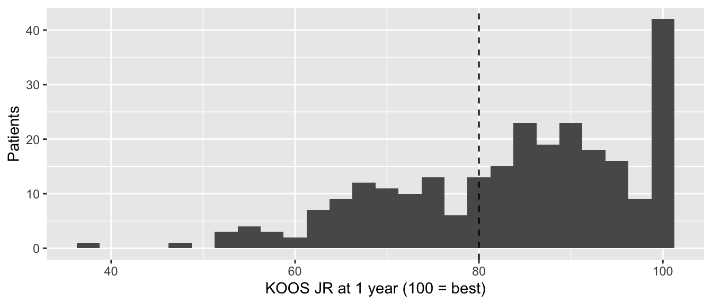
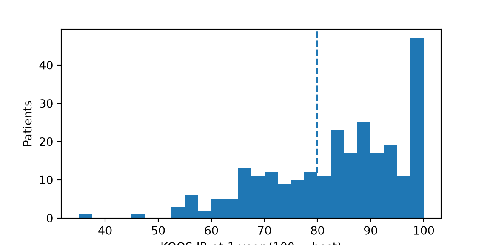

One-sample t test, Wilcoxon signed-rank test, chi-square goodness-of-fit test and binomial test: is our group different from a target or published value?
Sometimes there is only one group of patients, and the comparison is with a number that comes from outside your data: a target set by the hospital, a value published by a registry, a benchmark in a quality report. Is our group different from that number?
Note💡 How every section on this page works
Each section answers one question about one of the practice’s datasets: the joint replacement cohort, its patient-reported outcomes, or (for the binomial test) the hip fracture data. Its first code block loads the packages and the data, so you can jump straight to the section you need. Run that section’s blocks in order, top to bottom. The “hypothetical” values below are made up for teaching; they aren’t real registry figures or targets.
To keep the code short, the joint replacement examples use every case, including both cases of patients who had both sides operated on (80 patients in the whole cohort; page 2 counts them). In a real study, decide how to handle them (page 3) and say what you did.
Warning⚠️ Watch out: the value must come from outside your data
Choose the hypothetical value before you look at your data, and say where it came from. A value picked after seeing the results (“our mean is 84; let’s test against 90”) makes the p-value meaningless. If the comparison value comes from another group of patients whose data you have, compare the two groups instead (page 6).
One-sample t test
The question: The operating room books 90 minutes for every primary joint replacement. Is our average operative time different from 90 minutes?
When to use it
The outcome is a measurement (minutes, kg/m², points).
It’s roughly normal, or the sample is large (about 30 or more) and not badly skewed (page 3).
Each patient is counted once and patients are independent of each other.
The one-sample t test asks whether the sample mean is far from the hypothetical value, compared with how much a mean like this would wobble from one sample to the next.
Take the difference between the sample mean and the hypothetical value.
Divide: t = difference ÷ standard error. A t of 0 means the mean is exactly the hypothetical value. A t beyond about ±2 means the difference is large compared with the noise.
Turn t into a p-value: the chance of a t at least this far from 0 if the true mean really were the hypothetical value.
Once the test has run, a box under “Read the output” rebuilds t by hand.
op_test <-t.test(cohort$op_time_min, mu =90) # mu = the hypothetical meanop_test
One Sample t-test
data: cohort$op_time_min
t = -8.2265, df = 599, p-value = 1.204e-15
alternative hypothesis: true mean is not equal to 90
95 percent confidence interval:
83.1622 85.7978
sample estimates:
mean of x
84.48
sd(cohort$op_time_min) # the SD, for the Results sentence
[1] 16.43613
op_test = stats.ttest_1samp(cohort["op_time_min"], popmean=90) # popmean = the hypothetical meanprint(op_test)
print(cohort["op_time_min"].std()) # the SD, for the Results sentence
16.436134303765563
Read the output
t = −8.23 (statistic in Python): the observed mean is 8.2 standard errors below 90. The sign says which side.
df = 599: degrees of freedom, n − 1.
p < 0.001: a mean this far from 90 would be very unlikely if the true average were 90 minutes. The output prints 1.204e-15, which is scientific notation: e-15 means “move the decimal point 15 places to the left”.
mean of x = 84.48 (the first number on Python’s second line): our average operative time.
95% CI 83.2 to 85.8: the CI for our mean, not for the difference from 90.
SD = 16.4 minutes (the last line of output): not part of the test, but the Results sentence needs it.
time_difference <-mean(cohort$op_time_min) -90# step 1: the mean minus the hypothetical valuetime_se <-sd(cohort$op_time_min) /sqrt(600) # step 2: the standard error, SD ÷ √n (600 procedures)c(difference = time_difference, standard_error = time_se)
difference standard_error
-5.5200000 0.6710024
time_difference / time_se # step 3: divide
[1] -8.226498
time_difference = cohort["op_time_min"].mean() -90# step 1: the mean minus the hypothetical valuetime_se = cohort["op_time_min"].std() /600**0.5# step 2: the standard error, SD ÷ √n (600 procedures)print(time_difference, time_se)
-5.519999999999996 0.6710023731346747
print(time_difference / time_se) # step 3: divide
-8.22649847602267
The mean is 5.52 minutes below 90, and its standard error is 0.671 minutes: −5.52 ÷ 0.671 = −8.23, the t the test printed.
Effect size and 95% CI
The effect size is simply the difference from the hypothetical value: subtract 90 from the mean and from both ends of its CI.
print(cohort["op_time_min"].mean() -90) # mean difference
-5.519999999999996
print(op_test.confidence_interval().low -90, op_test.confidence_interval().high -90) # its 95% CI
-6.837803199717996 -4.202196800281996
Operations took 5.5 minutes less than the booked 90 on average (95% CI 4.2 to 6.8 minutes less). Whether that matters is a scheduling question, not a statistical one: over a day of four joints, it adds up to 4 × 5.5 = 22 minutes.
How to report it
Methods: Mean operative time was compared with the 90 minutes booked per case using a one-sample t test.
Results: Mean operative time was 84.5 minutes (SD 16.4); the booked time was 90 minutes (difference −5.5 minutes, 95% CI −6.8 to −4.2; p < 0.001).
Warning⚠️ Watch out: a published mean has its own uncertainty
A one-sample test treats the hypothetical value as exact. A registry mean is itself an estimate with a CI. If you’re comparing your patients with a published series and its CI is wide, say so, and don’t over-read a small difference.
Tip🔀 R vs Python: what the CI is a CI for
Both R’s t.test(x, mu = 90) and scipy’s ttest_1samp(x, popmean=90) report the CI for the mean (83.2 to 85.8), not for the difference from 90. Subtract the hypothetical value yourself, as above.
Wilcoxon signed-rank test
The question: Suppose our practice’s target is a 1-year KOOS JR of 80 points after knee replacement. Is our typical patient’s score different from 80?
When to use it
The outcome is skewed or has a ceiling or floor, so a mean isn’t a fair summary (page 3).
It ranks how far each patient is above or below the hypothetical value. It doesn’t assume a normal distribution, but it does need distances that can be compared, so the outcome must be a measurement.
For an ordinal scale (satisfaction from 1 to 5), count the patients above and below the value and compare the two counts with a binomial test. This is called the sign test.
Strictly, it tests the pseudomedian (the Hodges-Lehmann estimate below), which equals the median only for a symmetric distribution. With a ceiling the two differ a little; report both.
If the data are roughly normal → the one-sample t test is more familiar and slightly more powerful.
What the test really does
The Wilcoxon signed-rank test compares the scores with the hypothetical value by rank, so a few extreme scores can’t dominate.
For each patient, take the distance between their score and the hypothetical value, and note whether the score is above or below it.
Set aside any patient who scores exactly the hypothetical value.
Line the distances up by size, ignoring the direction, and give each its position: its rank. The smallest distance gets rank 1; tied distances share the average of their ranks.
Add up the ranks of the patients above the value, and separately the ranks of those below. Either sum can serve as the test statistic.
If the typical patient scored exactly the hypothetical value, the two sums would be about equal. The more one-sided they are, the smaller the p-value.
Once the test has run, a box under “Read the output” adds up the ranks by hand.
library(tidyverse)proms <-read_csv("data/proms_long.csv", show_col_types =FALSE)koos_1yr <- proms |>filter(instrument =="KOOS JR", visit =="1yr", !is.na(prom_score)) |>pull(prom_score)length(koos_1yr) # how many patients
[1] 260
sum(koos_1yr >80) # how many scored above the target
[1] 170
sum(koos_1yr <80) # how many scored below it
[1] 90
ggplot(tibble(score = koos_1yr), aes(score)) +geom_histogram(binwidth =2.5) +geom_vline(xintercept =80, linetype ="dashed") +# the targetlabs(x ="KOOS JR at 1 year (100 = best)", y ="Patients")

import numpy as npimport pandas as pdimport pingouin as pgimport matplotlib.pyplot as pltfrom scipy import statsproms = pd.read_csv("data/proms_long.csv")koos_1yr = proms.loc[(proms["instrument"] =="KOOS JR") & (proms["visit"] =="1yr"),"prom_score"].dropna()print(len(koos_1yr)) # how many patients
260
print((koos_1yr >80).sum()) # how many scored above the target
170
print((koos_1yr <80).sum()) # how many scored below it
90
fig, ax = plt.subplots(figsize=(6, 3))ax.hist(koos_1yr, bins=np.arange(35, 102.5, 2.5))ax.axvline(80, linestyle="--") # the targetax.set_xlabel("KOOS JR at 1 year (100 = best)")ax.set_ylabel("Patients")plt.show()

260 patients: 170 scored above 80 and 90 below. 170 + 90 = 260, so nobody scored exactly 80 and nobody is dropped from the test. A ceiling at 100 and a long tail to the left: the rank-based test is the safer choice.
koos_test <-wilcox.test(koos_1yr, mu =80,exact =FALSE, correct =FALSE, # see the R vs Python boxconf.int =TRUE) # adds the Hodges-Lehmann estimate and CIkoos_test
Wilcoxon signed rank test
data: koos_1yr
V = 22698, p-value = 2.293e-06
alternative hypothesis: true location is not equal to 80
95 percent confidence interval:
82.74996 86.10002
sample estimates:
(pseudo)median
84.35003
# pg.wilcoxon() runs scipy's test and adds the rank-biserial effect sizekoos_test = pg.wilcoxon(koos_1yr -80, method="approx", correction=False) # see the R vs Python boxprint(koos_test)
W_val alternative p_val RBC CLES
Wilcoxon 11231.5 two-sided 0.000002 0.337961 NaN
Read the output
V = 22698 (R) or W_val = 11231.5 (Python): the test statistic, a sum of ranks. The two programs report different sums (see the R vs Python box); the p-values are the same.
p < 0.001: scores this far from 80 would be very unlikely if the typical patient really scored 80. R prints 2.293e-06, that is 0.000002293; pingouin prints 0.000002.
(pseudo)median 84.35, 95% CI 82.7 to 86.1 (R only): the Hodges-Lehmann estimate of the center of the scores, with its CI.
RBC = 0.34 (Python): the rank-biserial effect size, below.
distance <- koos_1yr -80# step 1: each score's distance from the target of 80 (+ above, − below)distance_rank <-rank(abs(distance)) # step 3: rank the distances by size, ignoring the directionsum(distance_rank[distance >0]) # step 4: the rank sum of the scores above 80 (R's V)
[1] 22698.5
sum(distance_rank[distance <0]) # ... and of the scores below 80 (Python's W_val)
[1] 11231.5
260*261/2# the two sums always add up to n × (n + 1) ÷ 2
[1] 33930
distance = koos_1yr -80# step 1: each score's distance from the target of 80 (+ above, − below)distance_rank = distance.abs().rank() # step 3: rank the distances by size, ignoring the directionprint(distance_rank[distance >0].sum()) # step 4: the rank sum of the scores above 80 (R's V)
22698.5
print(distance_rank[distance <0].sum()) # ... and of the scores below 80 (Python's W_val)
11231.5
print(260*261/2) # the two sums always add up to n × (n + 1) ÷ 2
33930.0
The ranks of the 170 scores above 80 add up to 22698.5, R’s V (printed as 22698), and those of the 90 scores below to 11231.5, Python’s W_val. Together they make 33930, which is 260 × 261 ÷ 2. Nobody scored exactly 80, so step 2 sets nobody aside.
Effect size and 95% CI
Two effect sizes are useful here:
The Hodges-Lehmann estimate (the pseudomedian): a center of the scores, in points. It’s the median of all the averages of pairs of scores, so it’s less affected by the ceiling than a mean.
The rank-biserial correlation (r): from −1 (every patient below 80) through 0 (balanced) to +1 (every patient above 80). As a rough guide, 0.1 is small, 0.3 moderate and 0.5 large. It is the rank sum above 80 minus the rank sum below, as a share of their total: (22,698.5 − 11,231.5) ÷ 33,930 = 0.34.
effectsize::rank_biserial(koos_1yr, mu =80) # rank-biserial r and 95% CI
r (rank biserial) | 95% CI
--------------------------------
0.34 | [0.21, 0.46]
- Deviation from a difference of 80.
print(np.quantile(koos_1yr, [0.25, 0.50, 0.75])) # first quartile, median, third quartile
[74.7 85.75 93.925]
# Hodges-Lehmann estimate: the median of the averages of every pair of scoresdef hodges_lehmann(x): x = np.asarray(x) i, j = np.triu_indices(len(x)) # every pair, including each score with itselfreturn np.median((x[i] + x[j]) /2)print(hodges_lehmann(koos_1yr))
84.35
# scipy has no CI for it, so use a bootstrap: recompute it on 9999 resampled datasetsboot = stats.bootstrap((koos_1yr.to_numpy(),), hodges_lehmann, vectorized=False, rng=np.random.default_rng(2026))print(boot.confidence_interval)
The typical 1-year score was about 4 points above the target (Hodges-Lehmann estimate 84.4), and the rank-biserial r of 0.34 is a moderate effect: 170 patients scored above 80 and 90 below, and those above tended to be further from it. The median is 85.75 (IQR 74.7 to 93.9, the first line of output), a little above the Hodges-Lehmann estimate, as expected with a ceiling. R’s effectsize also prints a 95% CI for r, 0.21 to 0.46 (its footnote only restates the target of 80); pingouin gives r without a CI.
How to report it
Methods: Because 1-year KOOS JR scores showed a ceiling effect, they were compared with the 80-point target using a Wilcoxon signed-rank test, with the Hodges-Lehmann estimate and its 95% CI as the effect size.
Results: The median 1-year KOOS JR was 85.8 points (IQR 74.7 to 93.9); the target was 80 points (Hodges-Lehmann estimate 84.4, 95% CI 82.7 to 86.1; rank-biserial r = 0.34; p < 0.001).
Warning⚠️ Watch out: two different “Wilcoxon” tests
The Wilcoxon signed-rank test (this one) compares one group with a value, or two paired measurements (page 7). The Wilcoxon rank-sum test compares two independent groups; it’s the same as the Mann-Whitney test. Always write the full name.
Also: patients who score exactly 80 carry no information about the direction and are dropped from the test.
Tip🔀 R vs Python: Wilcoxon defaults
The statistic. R reports V, the sum of the ranks of patients above 80 (22698.5, printed as 22698). scipy (and pingouin) report the smaller of the two sums (11231.5). The two sums always add up to n(n + 1)/2, here 260 × 261 / 2 = 33,930, so they carry the same information and give the same p-value.
Exact or approximate. For small samples without ties, both programs compute an exact p-value; otherwise they use a normal approximation. R adds a continuity correction to the approximation by default; scipy doesn’t. We set exact = FALSE, correct = FALSE in R and method="approx", correction=False in Python so they match.
The Hodges-Lehmann CI. R computes it by inverting the test. scipy has no function for it, so the Python code uses a bootstrap, a different method, so the two CIs differ slightly (82.75 to 86.10 in R, 82.70 to 86.05 from the bootstrap).
Chi-square goodness-of-fit test
The question: Suppose a national registry reports that its patients are 10% ASA class 1, 55% class 2, 33% class 3 and 2% class 4. Is our mix of ASA classes the same?
When to use it
The outcome is categorical with two or more categories, and you have hypothetical proportions for every category.
Each patient falls in exactly one category, and is counted once.
The expected count in every category (total × hypothetical proportion) should be at least 5. Otherwise combine small categories, or with only two categories use the binomial test.
What the test really does
The goodness-of-fit test compares the counts you observed with the counts the hypothetical proportions would predict.
Work out the expected count for each category: the total number of patients × that category’s hypothetical proportion.
For each category, take (observed − expected)² ÷ expected, then add up the results. The sum is the test statistic, χ²: 0 when the observed counts match the expected ones exactly, and larger the further apart they are.
Turn χ² into a p-value with the chi-square distribution. This step is an approximation, and a poor one when expected counts are small. That is where the “at least 5” rule comes from.
Once the test has run, a box under “Read the output” rebuilds χ² by hand.
X-squared = 26.96 (statistic in Python): the chi-square statistic, adding up how far each observed count is from its expected count.
df = 3: degrees of freedom, the number of categories minus 1. Here 4 − 1. scipy doesn’t print it.
p < 0.001: a mix this different from the registry’s would be very unlikely if our patients came from the same mix. R prints 5.992e-06, that is 0.000005992.
The four parts are 9.60, 2.73, 11.64 and 3.00, and they add up to 26.96, the χ² the test printed. ASA 3 contributes most: 246 patients where 198 were expected.
Effect size and 95% CI
The test says the mix differs, not where. Look at each category’s observed percentage, with a 95% CI, next to the registry’s.
n = asa_counts.sum()cis = [stats.binomtest(int(k), int(n)).proportion_ci(method="wilson") for k in asa_counts]print(pd.DataFrame({"observed_pct": 100* asa_counts / n,"ci_low": [100* ci.low for ci in cis], # Wilson CIs, as on page 4"ci_high": [100* ci.high for ci in cis],"registry_pct": [100* p for p in registry],}, index=asa_counts.index))
ASA 3 makes the biggest difference: 41.0% of our patients (95% CI 37.1% to 45.0%) against 33% in the registry. The CI doesn’t include 33%.
How to report it
Methods: The distribution of ASA classes was compared with the registry’s using a chi-square goodness-of-fit test.
Results: ASA class 3 accounted for 41.0% of our patients (95% CI 37.1% to 45.0%) and 33% of the registry’s, and ASA class 1 for 6.0% and 10% (χ² = 27.0, df = 3, p < 0.001).
Warning⚠️ Watch out: counts, not percentages
The test needs the counts of patients in each category. Feeding it percentages (“6, 50, 41, 3”) gives a wrong p-value, because the test’s precision depends on how many patients there are.
Tip🔀 R vs Python: proportions or counts
R’s chisq.test(counts, p = ...) takes the hypothetical proportions (they must add up to 1). scipy’s chisquare(counts, f_exp=...) takes the expected counts (they must add up to the observed total). Same test, different inputs.
Binomial test
The question: Suppose the target is that 90% of hip fracture patients are operated on within 48 hours of admission. Is our proportion different?
When to use it
The outcome is yes/no, and you’re comparing one group’s proportion with a hypothetical proportion.
Each patient is counted once.
The binomial test is exact: it works for any sample size, including small numbers of events. (The chi-square goodness-of-fit test with two categories is its large-sample approximation.)
What the test really does
The binomial test works out exact probabilities, with no approximation.
Suppose the hypothetical proportion were true. The binomial distribution then gives the exact probability of every possible result: 0 patients with the outcome, 1 patient, 2 patients, and so on up to all of them.
Find the probability of the result you observed.
Add up the probabilities of all the results that are no more likely than yours, on either side of the expected number. That sum is the p-value.
Because it uses exact probabilities, the test works for any sample size. Once the test has run, a box under “Read the output” adds up the probabilities by hand.
library(tidyverse)hip_fracture <-read_csv("data/hip_fracture.csv", show_col_types =FALSE)count(hip_fracture, surgery_within_48h) # 1 = operated on within 48 hours of admission
# A tibble: 2 × 2
surgery_within_48h n
<dbl> <int>
1 0 166
2 1 1034
import pandas as pdfrom scipy import statship_fracture = pd.read_csv("data/hip_fracture.csv")print(hip_fracture["surgery_within_48h"].value_counts(dropna=False)) # 1 = operated on within 48 hours of admission
within_48h <-sum(hip_fracture$surgery_within_48h ==1)patients <-nrow(hip_fracture)surgery_test <-binom.test(within_48h, patients, p =0.90) # p = the hypothetical proportionsurgery_test
Exact binomial test
data: within_48h and patients
number of successes = 1034, number of trials = 1200, p-value =
2.682e-05
alternative hypothesis: true probability of success is not equal to 0.9
95 percent confidence interval:
0.8408295 0.8807126
sample estimates:
probability of success
0.8616667
prop.test(within_48h, patients, correct =FALSE)$conf.int # the Wilson interval, for comparison
number of successes = 1034, number of trials = 1200 (k=1034, n=1200 in Python): 1,034 patients operated on within 48 hours (“successes” is just the software’s word for the outcome you counted).
p < 0.001: a proportion this far from 90% would be very unlikely if our true proportion were 90%. R prints 2.682e-05, that is 0.00002682.
probability of success = 0.862 (statistic in Python): our proportion, 86.2%.
95% CI 0.841 to 0.881: our true proportion is plausibly anywhere from 84.1% to 88.1%. This is the exact (Clopper-Pearson) interval.
probabilities <-dbinom(0:1200, size =1200, prob =0.90) # step 1: the probability of each possible result, from 0 to 1200, if the target of 90% were trueobserved_probability <-dbinom(1034, size =1200, prob =0.90) # step 2: the probability of the result we saw, 1034sum(probabilities[probabilities <= observed_probability * (1+1e-7)]) # step 3: add up every result that is no more likely (the small factor guards against rounding)
[1] 2.681613e-05
import numpy as npprobabilities = stats.binom.pmf(np.arange(1201), 1200, 0.90) # step 1: the probability of each possible result, from 0 to 1200, if the target of 90% were trueobserved_probability = stats.binom.pmf(1034, 1200, 0.90) # step 2: the probability of the result we saw, 1034print(probabilities[probabilities <= observed_probability * (1+1e-7)].sum()) # step 3: add up every result that is no more likely (the small factor guards against rounding)
2.681612856420021e-05
If 90% were the true proportion, 1,080 of the 1,200 patients would be expected. Seeing exactly 1,034 would be very unlikely, and so would every result further from 1,080 on either side. Their probabilities add up to 0.0000268, the p-value both programs printed (2.682e-05).
Effect size and 95% CI
The effect size is the difference from the target: 86.2% − 90% = −3.8 percentage points. Its 95% CI is the CI for our proportion minus 90%: −5.9 to −1.9 percentage points. It excludes 0, which matches the p-value below 0.05. In patients: at 90%, 1,080 of the 1,200 would have been operated on within 48 hours, 46 more than were.
How to report it
Methods: The proportion of patients operated on within 48 hours of admission was compared with the target of 90% using an exact binomial test. 95% CIs for proportions are exact (Clopper-Pearson).
Results: Within 48 hours of admission, 1,034 of 1,200 patients (86.2%; 95% CI 84.1% to 88.1%) were operated on; the target was 90% (binomial test p < 0.001).
Warning⚠️ Watch out: decide one- or two-sided before you look
A target invites a one-sided question: are we below 90%? A one-sided test roughly halves the p-value, so choosing one after seeing which side of the target you landed on makes the p-value too small. Use a one-sided test only when the protocol named it before the data came in, and a result on the other side would genuinely change nothing. Otherwise report the two-sided test, as here.
Tip🔀 R vs Python: exact CIs
R’s binom.test() and scipy’s binomtest() agree on the p-value. R prints the exact (Clopper-Pearson) CI automatically; in scipy, ask for it with proportion_ci(method="exact"). It’s a little wider than the Wilson interval that page 4 uses, which for these 1,034 of 1,200 patients runs from 84.1% to 88.0% (the last line of output under “Run it”). Either is fine; say which you used.
Exercises
The solutions use the packages and data loaded in the sections above, so run the page from the top first.
1. Suppose a registry reports a mean age of 66 years at primary joint replacement. Is our patients’ mean age different? Run the test and report the mean difference with its 95% CI.
One Sample t-test
data: cohort$age
t = -1.2461, df = 599, p-value = 0.2132
alternative hypothesis: true mean is not equal to 66
95 percent confidence interval:
64.76351 66.27649
sample estimates:
mean of x
65.52
Results: Mean age was 65.5 years; the registry’s was 66 years (difference −0.5 years, 95% CI −1.2 to 0.3; p = 0.213).
The CI includes 0 and rules out a difference of more than about a year in either direction.
2. Suppose a national hip fracture audit reports a 30-day mortality of 7%. Page 4 found that 74 of our 1,200 patients died within 30 days. Which test would you use, and what do you conclude?
TipSolution
A yes/no outcome compared with a hypothetical proportion: the binomial test.
Exact binomial test
data: 74 and 1200
number of successes = 74, number of trials = 1200, p-value = 0.2822
alternative hypothesis: true probability of success is not equal to 0.07
95 percent confidence interval:
0.04872831 0.07680111
sample estimates:
probability of success
0.06166667
Results: Within 30 days, 74 of 1,200 patients died (6.2%; 95% CI 4.9% to 7.7%); the audit reports 7% (binomial test p = 0.282).
The CI includes 7%, so there’s no clear evidence that our mortality differs from the audit’s. That isn’t the same as showing it’s equal: our true rate could be anywhere from 4.9% to 7.7%. Don’t write “our mortality matched the audit”; report the CI and let it speak.
3. Suppose a survey of joint replacement patients found 50% never smokers, 40% former smokers and 10% current smokers. Test whether our smoking mix differs, and write the Results sentence.
Results: Of our patients, 53.5% had never smoked, 38.3% were former and 8.2% current smokers; the survey’s figures were 50%, 40% and 10% (χ² = 3.9, df = 2, p = 0.142).
The second line of output gives the percentages. The test has 3 categories − 1 = 2 degrees of freedom; scipy doesn’t print them.